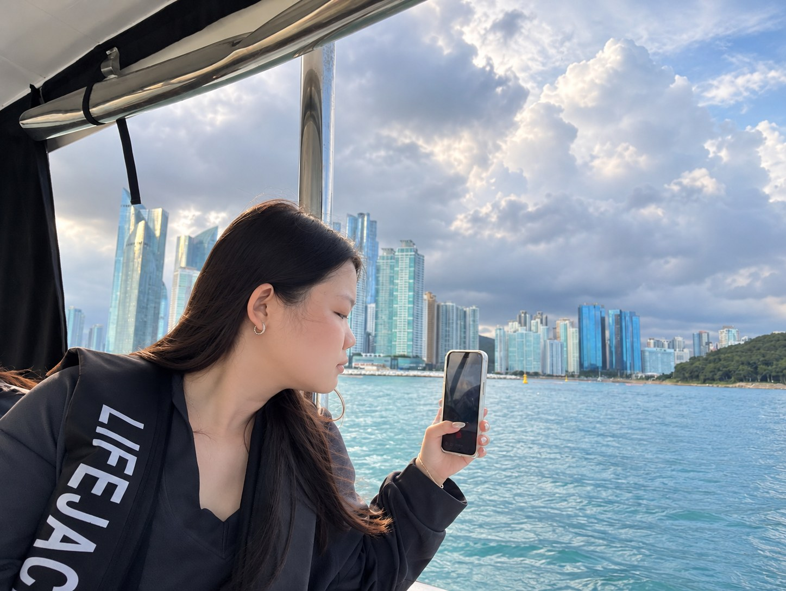

SCROLL TO EXPLORE
01 / Little favorites
生活裡喜歡的事
點選不同的興趣，看看我平常喜歡做些什麼。
FAVORITE / 01
喜歡下廚的時光
從準備食材到完成一道菜，喜歡自己動手做出想吃的味道。
COOKING / DAILY LIFE
02 / Personal details
我的小檔案
點開不同的分類，認識我的個性與生活偏好。
PERSONAL ARCHIVE
FILE 01 / PERSONALITY
INFJ
我比較喜歡先觀察、再慢慢熟悉一個環境。熟悉之後，也會有很愛聊天、分享生活的一面。MBTI 只是我認識自己的其中一種方式，不代表全部的我。
慢熟喜歡觀察重視感受